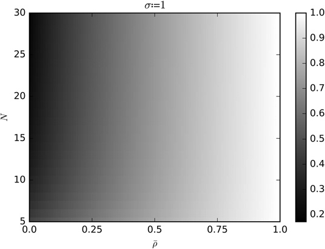
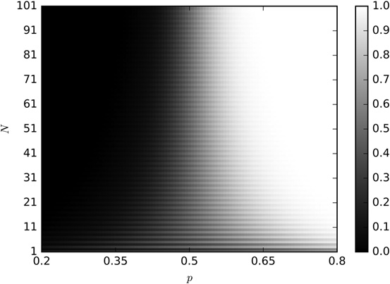
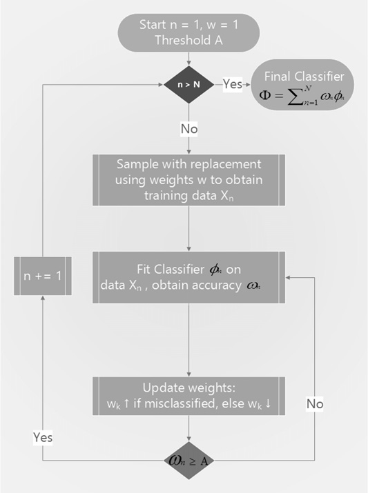

第二部分：建模
集成方法
6.1 动机
本章介绍两种最常用的 ML 集成方法。1参考文献和脚注列出了一些介绍这些方法的书籍与文章。与本书其他章节一样，这里假定你已经用过这些方法。本章的重点是解释它们为什么有效，以及怎样避免在金融问题中误用它们。
6.2 误差的三个来源
ML 模型通常会受到三类误差影响：2
- 偏差：这类误差来自不切实际的假设。偏差较高，说明 ML 算法没有识别出特征与结果之间的重要关系，此时称模型“欠拟合”。
- 方差：这类误差来自模型对训练集细微变化过于敏感。方差较高，说明算法已经过拟合训练集，所以训练数据稍有变化，预测结果就可能大不相同。算法没有学到训练集中的一般规律，反而把噪声当成了信号。
- 噪声：这类误差来自观测值本身的波动，例如无法预测的变化或测量误差。它属于不可约误差，任何模型都无法解释。
考虑训练集中的观测 \(\{x_i\}_{i=1,\ldots,n}\)和对应的实数结果 \(\{y_i\}_{i=1,\ldots,n}\)。假设存在函数 \(f[x]\)，满足 \(y=f[x]+\varepsilon\)，其中 \(\varepsilon\)是白噪声，且 \(\mathbb{E}[\varepsilon_i]=0\)与 \(\mathbb{E}[\varepsilon_i^2]=\sigma_\varepsilon^2\)。我们希望估计函数 \(\hat f[x]\)，使它尽可能贴合 \(f[x]\)，也就是让均方估计误差 \(\mathbb{E}[(y_i-\hat f[x_i])^2]\)最小。由于存在噪声 \(\sigma_\varepsilon^2\)，均方误差不可能为零。它可以分解为：
集成方法把一组采用同一种学习算法的弱学习器组合起来，得到一个比任何单个学习器表现都好的强学习器。集成方法可以降低偏差、方差，或同时降低两者。
6.3 自助聚合（bagging）
自助聚合（bootstrap aggregation，简称 bagging）可以有效降低预测方差。具体步骤如下。第一，有放回地随机抽样，生成 N 个训练集。第二，分别用每个训练集拟合一个估计器，共得到 N 个估计器。各估计器相互独立，因此可以并行拟合。第三，对 N 个模型的预测取简单平均，得到集成预测。对于分类问题，某个观测属于某一类别的概率，可以用把它判为该类别的估计器占比表示，这就是多数投票。如果基估计器能够给出预测概率，bagging 分类器也可以对这些概率取平均。使用 sklearn 的 BaggingClassifier 计算袋外准确率时，需要留意这个缺陷：https://github.com/scikit-learn/scikitlearn/issues/8933。一种规避方法是把标签依次重命名为连续整数。
6.3.1 降低方差
bagging 的主要优点是降低预测方差，从而缓解过拟合。bagging 预测 \(\varphi_i[c]\)的方差取决于集成中估计器的数量 \(N\)、单个估计器预测的平均方差 \(\bar\sigma^2\)，以及各估计器预测之间的平均相关性 \(\bar\rho\)：
其中，\(\sigma_{i,j}\)是估计器 \(i,j\)预测值之间的协方差。平均方差和平均相关性定义为：
上式表明，只有在 \(\bar\rho<1\)时，bagging 才能降低方差；当 \(\bar\rho\to1\)，\(\mathbb{V}\left[N^{-1}\sum_{i=1}^{N}\varphi_i[c]\right]\to\bar\sigma^2\)。序贯自助法（第 4 章）的目标之一，是让样本尽可能相互独立，从而减小 \(\bar\rho\)，进而降低 bagging 分类器的方差。图 6.1 展示了 bagging 预测的标准差随 \(N\in[5,30]\)，\(\bar\rho\in[0,1]\)变化，计算中固定 \(\bar\sigma=1\)。

6.3.2 提高准确率
考虑一个 bagging 分类器，它要从 \(k\)个类别中做出预测，预测结果由 \(N\)个相互独立的分类器通过多数投票决定。把每个预测结果标记为 \(\{0,1\}\)，其中 \(1\)表示预测正确。单个分类器的准确率就是概率 \(p\)，也就是把预测标记为 \(1\)的概率。平均会有 \(Np\)个预测被标为 \(1\)，其方差为 \(Np(1-p)\)。被预测次数最多的类别与真实类别相同时，多数投票预测正确。例如，当 \(N=10\)与 \(k=3\)时，如果真实类别为 \(A\)且投票数为 \([A,B,C]=[4,3,3]\)，bagging 分类器会预测正确；但如果真实类别仍为 \(A\)且投票数为 \([A,B,C]=[4,1,5]\)，bagging 分类器会预测错误。一个充分条件是，正确标签的总数满足 \(X>\frac{N}{2}\)。一个必要但不充分的条件是 \(X>\frac{N}{k}\)，其发生概率为：
因此，只要 \(N\)足够大，例如满足 \(N>p(p-1/k)^{-2}\)，并且 \(p>\frac{1}{k}\Rightarrow P\left[X>\frac{N}{k}\right]>p\)，bagging 分类器的准确率就会高于各分类器的平均准确率。代码清单 6.1 实现了这一计算。
from scipy.misc import comb
N,p,k=100,1./3,3.
p_=0
for i in xrange(0,int(N/k)+1):
p_+=comb(N,i)*p**i*(1-p)**(N-i)
print p,1-p_这说明，只要计算资源允许，通常都值得对分类器使用 bagging。不过，bagging 与 boosting 不同，无法提高较差分类器的准确率：如果单个学习器表现很差（\(p\ll\frac{1}{k}\)），多数投票的表现仍然很差，只是方差会降低。图 6.2 展示了这些情况。由于实现 \(\bar\rho\ll1\)要比实现 \(p>\frac{1}{k}\)更容易，所以 bagging 更擅长降低方差，而不是降低偏差。
如需进一步分析，可以参阅孔多塞陪审团定理。这个定理原本用于研究政治学中的多数投票，但它处理的问题与上面的讨论十分相似。

6.3.3 观测冗余
第 4 章介绍了金融观测不能假定为 IID 的一个原因。观测冗余会从两个方面损害 bagging。第一，即使有放回抽取的样本没有包含完全相同的观测，它们仍可能几乎一样。这会导致 \(\bar\rho\approx1\)，因此无论 \(N\)多大，bagging 都无法降低方差。例如，若时点 \(t\)的观测标签由 \(t\)与 \(t+100\)之间的收益率决定，每个 bagging 估计器最多只应抽取 1% 的观测。第 4 章第 4.5 节给出了三种替代方案，其中一种是在 sklearn 的 BaggingClassifier 中设置 max_samples=out['tW'].mean()。另一个更好的办法是使用序贯自助法。
观测冗余的第二个危害，是袋外准确率会被高估。这是因为有放回随机抽样会把与袋外样本非常相似的样本放入训练集。此时，如果划分前不打乱数据，正确进行分层 k 折交叉验证，测试集准确率会远低于袋外估计。因此，建议设置 StratifiedKFold(n_splits=k, shuffle=False)来划分数据，对 bagging 分类器进行交叉验证，并忽略袋外准确率。较小的 \(k\)通常比大 k 更合适，因为折数过多会再次让测试集包含与训练样本过于相似的样本。
6.4 随机森林
决策树很容易过拟合，从而增大预测方差。3为解决这个问题，随机森林（RF）采用集成预测来降低方差。
RF 与 bagging 有相似之处：两者都会在数据的自助抽样子集上训练相互独立的估计器。主要区别是，随机森林又加入了一层随机性：优化每个节点的划分时，只评估从全部特征中无放回随机抽取的一部分，从而进一步降低估计器之间的相关性。
和 bagging 一样，只要 \(\bar\rho<1\)，RF 就能在不过拟合的情况下降低预测方差。RF 的第二个优点是能够评估特征重要性，第 8 章会详细讨论。第三个优点是能估计袋外准确率，不过第 6.3.3 节已经说明，在金融应用中这个数值很可能偏高。与 bagging 一样，RF 的偏差也不一定低于单棵决策树。
如果大量样本冗余或不满足 IID，仍然会发生过拟合：有放回随机抽样会生成许多几乎相同的树（\(\bar\rho\approx1\)），且每棵决策树都已经过拟合，这正是决策树的常见缺点。与 bagging 不同，RF 总是让自助样本的大小等于训练集大小。下面以 sklearn 的类为例，介绍几种缓解 RF 过拟合的方法；这些方法同样适用于其他实现：
- 减小参数
max_features的值，迫使不同树之间产生差异。 - 提前停止：把正则化参数
min_weight_fraction_leaf设得足够大，例如 5%，使袋外准确率接近样本外 k 折准确率。 - 使用
BaggingClassifier封装DecisionTreeClassifier，其中max_samples设为样本之间的平均唯一性（avgU）。clf=DecisionTreeClassifier(criterion='entropy',max_features='auto',class_weight='balanced')bc=BaggingClassifier(base_estimator=clf,n_estimators=1000,max_samples=avgU,max_features=1.)
- 使用
BaggingClassifier封装RandomForestClassifier，其中max_samples设为样本之间的平均唯一性（avgU）。clf=RandomForestClassifier(n_estimators=1,criterion='entropy',bootstrap=False,class_weight='balanced_subsample')bc=BaggingClassifier(base_estimator=clf,n_estimators=1000,max_samples=avgU,max_features=1.)
- 修改 RF 类，用序贯自助法替代标准自助抽样。
总之，代码清单 6.2 使用不同的类，展示了设置 RF 的三种方式。
clf0=RandomForestClassifier(n_estimators=1000,class_weight='balanced_subsample',
criterion='entropy')
clf1=DecisionTreeClassifier(criterion='entropy',max_features='auto',
class_weight='balanced')
clf1=BaggingClassifier(base_estimator=clf1,n_estimators=1000,max_samples=avgU)
clf2=RandomForestClassifier(n_estimators=1,criterion='entropy',bootstrap=False,
class_weight='balanced_subsample')
clf2=BaggingClassifier(base_estimator=clf2,n_estimators=1000,max_samples=avgU,
max_features=1.)拟合决策树时，如果沿着与坐标轴对齐的方向旋转特征空间，通常可以减少决策树所需的层数。因此，我建议先对特征做 PCA，再拟合 RF；这样可能加快计算并减轻过拟合，第 8 章会进一步讨论。另外，正如第 4 章第 4.8 节所述，class_weight='balanced_subsample'有助于减少决策树对少数类别的误判。
6.5 提升法（boosting）
Kearns 与 Valiant [1989]属于最早一批提出这一问题的研究者：能否把多个弱估计器组合成一个准确率较高的估计器？不久后，Schapire [1990]证明答案是肯定的，他使用的过程就是今天所说的 boosting。一般步骤如下。第一，先给样本设置相同的初始权重，再按这些权重有放回随机抽样，生成一个训练集。第二，用该训练集拟合一个估计器。第三，如果这个估计器的准确率高于接受阈值，例如二分类中高于 50%、优于随机猜测，就保留它；否则丢弃。第四，提高被误分类观测的权重，降低正确分类观测的权重。第五，重复上述步骤，直到得到 \(N\)个估计器。第六，集成预测取 \(N\)个模型预测的加权平均值，各模型的权重由自身准确率决定。boosting 算法有很多种，AdaBoost 是其中最常见的一种（Geron [2017]）。图 6.3 总结了标准 AdaBoost 实现的决策流程。

6.6 金融中的 bagging 与 boosting
根据上面的说明，boosting 与 bagging 有几个明显区别：4
- 各分类器按顺序依次拟合。
- 表现较差的分类器会被丢弃。
- 每轮迭代会给观测设置不同的权重。
- 集成预测是各学习器预测的加权平均值。
boosting 的主要优点是能同时降低预测的方差和偏差，但修正偏差会提高过拟合风险。可以认为，在金融应用中，bagging 通常比 boosting 更合适。bagging 主要处理过拟合，boosting 主要处理欠拟合。金融数据的信噪比较低，ML 算法很容易过拟合，因此过拟合通常比欠拟合更值得担心。此外，bagging 可以并行运行，而 boosting 通常必须依次运行。
6.7 利用 bagging 提升可扩展性
很多常用 ML 算法无法随样本量有效扩展，支持向量机（SVM）就是典型例子。用一百万个观测拟合 SVM，算法可能需要很久才能收敛。即使最终收敛，也不能保证解是全局最优，更不能保证没有过拟合。
一种实用办法是构建 bagging 算法，并选用难以处理大样本的模型（如 SVM）作为基估计器，同时给基估计器设置严格的提前停止条件。例如，在 sklearn 的 SVM 实现中，可以把参数 max_iter设为较小值，例如迭代 1E5 次。默认值是 max_iter=-1，表示估计器会一直迭代，直到误差低于容差。也可以通过参数 tol提高容差，其默认值为 tol=1E-3。任一设置都能强制提前停止。其他算法也有类似参数，例如 RF 的层数（max_depth），或一个叶节点所需的输入样本权重占总权重的最小比例（min_weight_fraction_leaf）。
bagging 可以并行运行，因此能把一个很大的串行任务拆成许多同时执行的小任务。提前停止固然会增大各基估计器输出的方差，但 bagging 带来的方差下降完全可能抵消这部分增加。增加更多相互独立的基估计器，还可以进一步控制方差。这样使用 bagging，就能在超大数据集上快速得到稳健的估计结果。
脚注
- 如需了解集成方法的入门知识，请访问 http://scikit-learn.org/stable/modules/ensemble.html。 返回正文
- 我通常不会引用维基百科，不过这篇文章中有几幅图能直观说明本节主题：https://en.wikipedia.org/wiki/Bias%E2%80%93variance_tradeoff。 返回正文
- 如需直观了解随机森林，请访问 https://quantdare.com/random-forest-many-is-better-than-one/。 返回正文
- 如需通过图示了解 bagging 与 boosting 的区别，请访问 https://quantdare.com/what-is-the-difference-between-bagging-and-boosting/。 返回正文
参考文献
- Geron, A. (2017): Hands-on Machine Learning with Scikit-Learn and TensorFlow: Concepts, Tools, and Techniques to Build Intelligent Systems, 1st edition. O’Reilly Media.
- Kearns, M. and L. Valiant (1989): “Cryptographic limitations on learning Boolean formulae and finite automata.” In Proceedings of the 21st Annual ACM Symposium on Theory of Computing, pp. 433–444, New York. Association for Computing Machinery.
- Schapire, R. (1990): “The strength of weak learnability.” Machine Learning. Kluwer Academic Publishers. Vol. 5 No. 2, pp. 197–227.
参考书目
- Gareth, J., D. Witten, T. Hastie, and R. Tibshirani (2013): An Introduction to Statistical Learning: With Applications in R, 1st ed. Springer-Verlag.
- Hackeling, G. (2014): Mastering Machine Learning with Scikit-Learn, 1st ed. Packt Publishing.
- Hastie, T., R. Tibshirani and J. Friedman (2016): The Elements of Statistical Learning, 2nd ed. Springer-Verlag.
- Hauck, T. (2014): Scikit-Learn Cookbook, 1st ed. Packt Publishing.
- Raschka, S. (2015): Python Machine Learning, 1st ed. Packt Publishing.